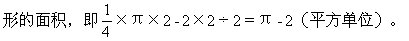
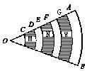

习题二解答
一、填空题：
1.阴影部分等于正方形面积的一半，即4.5（平方单位）。
2.阴影部分等于三角形面积的一半，即25（平方单位）。
3.阴影部分等于一个小正方形的面积，即1（平方单位）。

5.阴影部分等于长是b、宽是a的矩形面积，即ab（平方单位）。

（平方单位）。
8.阴影部分面积等于正方形面积减去圆面积，即100-25π（平方单位）。
9.阴影部分面积等于大半圆面积减去中和小两个半圆面积，即18π-
10.阴影部分面积等于大半圆面积减去小半圆面积再减去一个直角三角
11.阴影部分面积等于两个半圆面积之和减去等腰直角三角形面积，即π
10×10=50π-100（平方单位）。
14.阴影部分面积等于2个圆面积加上一个正方形面积，即2×π×42+82=32π+64（平方单位）。
17.阴影部分面积等于小半圆面积加中半圆面积减大半圆面积再加直角
（平方单位）。
19.将左边阴影部分割补到右边，所以阴影部分就是这个平行四边形面积，即2（平方单位）.
20.扇形面积减去半个圆面积再减去三角形面积等于圆外阴影部分面积，
方单位），即为所求阴影部分的面积.或者用圆内两个弓形从下半圆割下，补
22.4（平方单位）.阴影面积是以2为边长的正方形面积。
二、解答题：
面积差，即12.56－（12.56－2.28）＝2.28平方厘米，即为所求阴影部分面积。
2.如右图，把阴影部分下端的一块割下，补在上面的空白部分，这样阴
得的差，即：
3.33％。
4.7.5π平方厘米。
5.如右图，阴影部分面积＝矩形面积－（S1＋S2）.把S向左平移2个单位，则与S拼成一个边长为4的正方形.
∴阴影部分面积＝4×6－4×4＝8（平方单位）。
6.如右图，OD＝2×OC，以OD为半径的扇形面积是以OC为半径的扇形面积的22＝4倍，阴影M的面积是以OC为半径的扇形面积的4－1=3倍，面积为10×3＝30.OE＝3×OC，OF=4×OC，以OE、OF为半径的扇形，分别是以OC为半径的扇形面积的32=9倍、42=16倍，阴影N的面积为：10×（42-32）=70.OG＝5×OC，OA＝6×OC，以OG、OA为半径的扇形面积，分别是以OC为半径的扇形面积的52＝25倍、62=36倍，阴影W的面积是以OC为半径的扇形面积的62-52＝11倍，阴影W的面积为10×11＝110，所以阴影部分的总面积为30+70+110=210（平方厘米）

面积是2×2÷2=2平方厘米，所以阴影部分面积是：3.14－2＝1.14平方厘米。
8.解：∵OA＝OB，在等腰三角形△AOB中，∠1＝∠2＝15°，
∵∠AOB＝180°-2×15°＝150°.同理∠AOC=150°，
∴∠BOC＝360°-∠AOB-∠AOC
＝360°-（150°+150°）
＝60°，